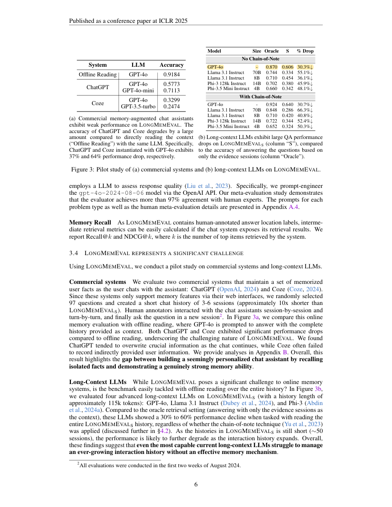
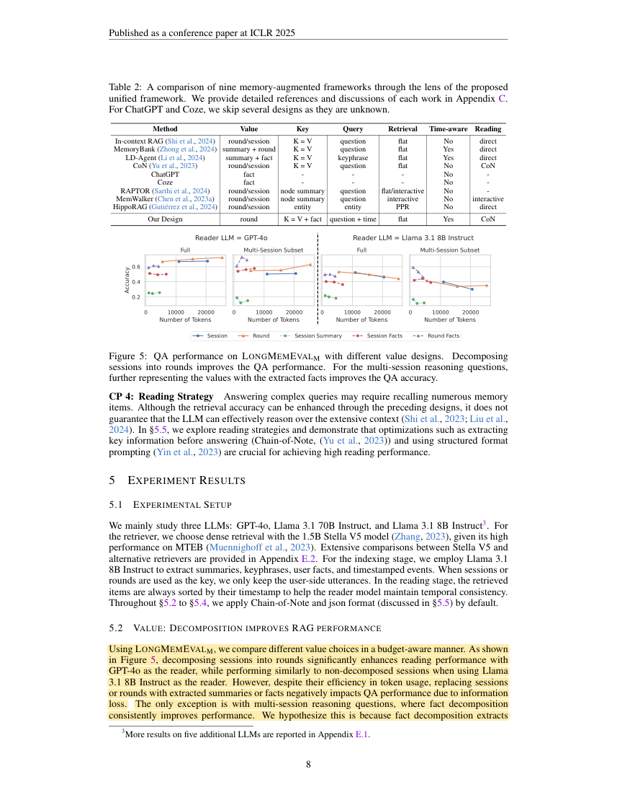
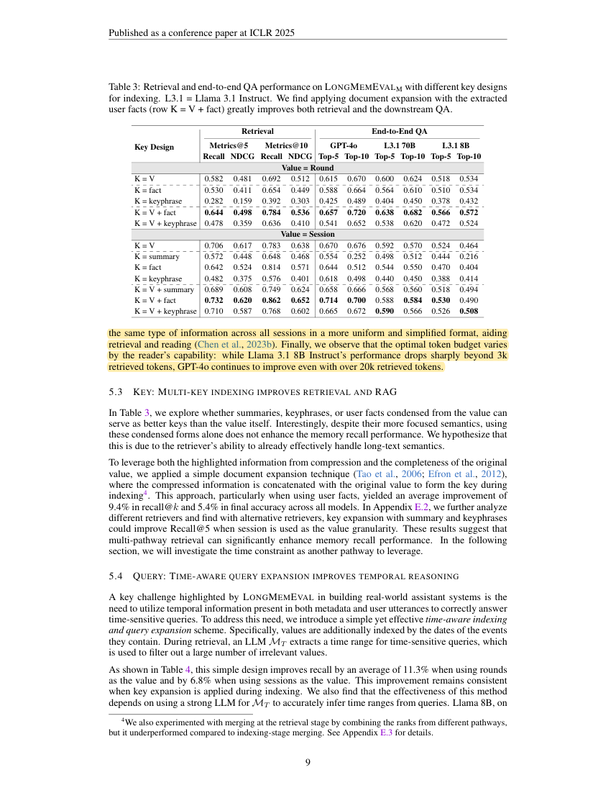

R39 · Full-text methods and results
LongMemEval: Benchmarking Chat Assistants on Long-Term Interactive Memory
International Conference on Learning Representations (ICLR) · 2025
Di Wu, Hongwei Wang, Wenhao Yu, Yuwei Zhang, Kai-Wei Chang, Dong Yu
LongMemEval evaluates memory use across extended interactions and compares retrieval, granularity, and reading strategies. Its findings motivate structured evidence access while warning that excessive compression can lose information.
Research question
Can assistants extract, aggregate, update, and temporally reason about information across sessions, and abstain when evidence is insufficient?
DualGraph-OSCE should seek an advantage through traceable evidence links and complete condition coverage. Shortening input can reduce distractors but also remove grading evidence.
Design, comparisons, and interpretation
- The benchmark contains 500 human-revised questions. LLM-simulated evidence sessions were edited and annotated with timestamps and evidence positions, then combined with unrelated, non-conflicting sessions.
- The S version contains about 115K tokens; M contains 500 sessions and approximately 1.5M tokens. Full history and an oracle containing only relevant evidence were evaluated separately.
- QA was judged by GPT-4o-2024-08-06. The authors’ meta-evaluation reported over 97% agreement with humans; retrieval was also assessed with Recall@k and NDCG@k.
- Retrieval experiments used Stella V5 and Llama3.1-8B for index extraction. Comparisons covered sessions, turns, summaries/facts, combined original-text/fact indexes, and temporal filtering.
- Reading comparisons tested natural language versus JSON and direct answering versus Chain-of-Note. Oracle evidence helped isolate reading errors from retrieval errors.
These findings come from the source tasks and comparisons. Their relevance to pharmacy OSCE must be tested in our four stations.
Results and scope
- Figure 3(b): GPT-4o declined from 87.0% with oracle evidence to 60.6% with the full S history—a 26.4-percentage-point or 30.3% relative decrease.
- Section 5.2/Figure 5: replacing sessions or turns with summaries or facts usually reduced QA performance, with an exception for multi-session aggregation.
- In the same section, Llama3.1-8B declined beyond about 3K retrieved tokens, while GPT-4o still improved beyond 20K. Section 5.5 also shows that JSON alone was not consistently superior.
The models, tasks, samples, and scoring procedures do not define a universal long-context error rate.
Relevance to DualGraph-OSCE
The paper supports checking evidence recall, information preservation, and reading or scoring separately.
Study design implications
DualGraph-OSCE should retain links to original utterances, conditions, negation, time, and missing-evidence states. Evidence coverage should be checked per item after extraction. This is a design recommendation, not a demonstrated result.
Claims this source does not support
- That results from 115K-token histories transfer directly to a station of a few thousand tokens.
- That shorter content is always more accurate.
- That summaries, facts, JSON, or graphs are universally superior representations.
See its role in the DualGraph-OSCE method →Use in the manuscript
Introduction: motivate reliable evidence use
Long-interaction studies reveal a gap between retrieving evidence and using it, although their histories are much longer than a single station in this project [R39].
Methods: explain the validation design
To check evidence preservation, the proposed evaluation measures original-evidence coverage, incorrect citations, and final assessment decisions separately [R39].
Discussion: state the limits
Evidence extraction can omit necessary details; reduced input length alone is therefore not evidence of DualGraph-OSCE accuracy [R39].
The citation supports prior methods and findings. Any advantage of DualGraph-OSCE must be demonstrated by our own controlled comparison.
Original article and precise source locations
Reviewed version: the official ICLR proceedings PDF.
| Source location | Physical PDF page | Content |
|---|
| §3.1–3.3；Figure2 | 4, 5 | Data, context lengths, and evaluation |
| §3.4；Figure3(b) | 6 | Absolute and relative gap between full history and oracle evidence |
| §5.1–5.2；Figure5 | 8, 9 | Granularity, information loss, and token budgets |
| §5.5；Figure6 | 10 | Combining structured formats with reading strategies |
GPT-4o with oracle evidence and full history
Source: Figure3(b); physical PDF page 6. Yellow marks identify the model result row. These are source findings, not DualGraph-OSCE results.

R39-E2Further compression can reduce performance
Source: §5.2; physical PDF page 8. Yellow marks identify the cited passage. These are source findings, not DualGraph-OSCE results.

R39-E3GPT-4o can still improve with more retrieved tokens
Source: §5.2; physical PDF page 9. Yellow marks identify the cited passage. These are source findings, not DualGraph-OSCE results.
